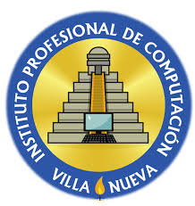

📦INICIO
*** ACERCA DE ***
☎️COMUNICATE
💼SERVICIO
📋INSCRIBIRSE
HISTORIA
El Instituto Profesional de Computación (IPC) nació en 1993 gracias a la iniciativa de tres profesores cuyas especialidades eran la informática, las ciencias contables, y las humanidades. La actividad de la institución se orientó a dos carreras del nivel medio, del ciclo diversificado, específicamente Bachillerato en Computación con Orientación Comercial, y Perito Contador con Orientación en Computación.
Había demanda de una institución moderna y seria que sirviera las dos carreras mencionadas con responsabilidad, a la vez que aplicara conceptos vanguardistas. Debe resaltarse que el IPC contaba con equipo informático de última generación; y que esta condición se ha mantenido vigente hasta la fecha.
En principio se atendió a dos secciones, una de cada carrera, únicamente de cuarto grado. En 1994 se contaba con cuatro secciones: dos de cuarto y dos de quinto. Se graduó a la primera promoción de bachilleres. La primera promoción de peritos contadores fue la de 1996.
En 1998 los servicios educativos del IPC crecieron hacia el ciclo básico, además de implementarse el Secretariado Bilingüe (español/inglés) con Orientación en Computación. Se llegó así a la estructura actual del plantel que sirve los tres grados básicos y tres carreras, culminando exitosamente la formación de muchas promociones.
